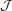
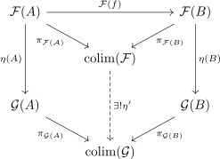
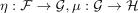
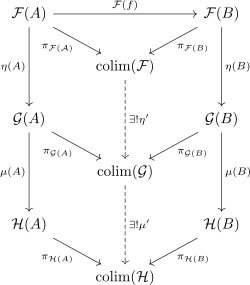
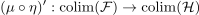
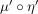
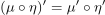

derived colim functor
1. Definition
Let  be categories, such that
be categories, such that  admits colimits of the shape
admits colimits of the shape

. Then for the functor category the derived colimit functor is defined as
the derived colimit functor is defined as

where  is the morphism induced by the universal property
is the morphism induced by the universal property

2. Proof
2.1. objects
for each diagram  , choose a representative of the isomorphism class of colimits.
, choose a representative of the isomorphism class of colimits.
Uses AC, probably fixable with some equivalence class / anafuntcor stuff
2.2. identity
Given the identity natural transformation, the identity morphism  makes the diagram commute.
By universal property, it is the only morphism making the diagram commute, hence by construction we get
makes the diagram commute.
By universal property, it is the only morphism making the diagram commute, hence by construction we get 
2.3. composition
Suppose we have objects and natural transformations

Then we get
where both halfes commute, hence also the whole prim. Therefore, we get a unique morphism

But the composition

makes also the diagram commute, hence by uniqueness induced by the universal property, we conclude, that